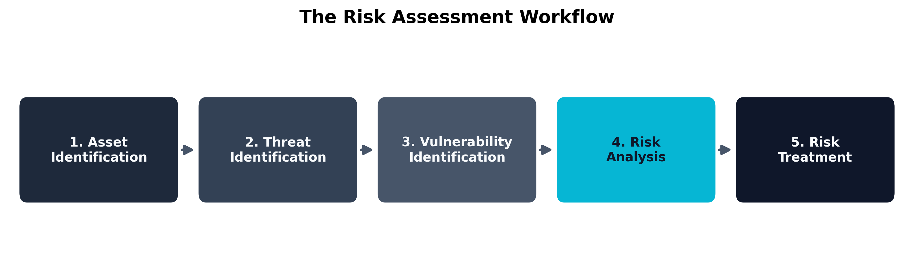
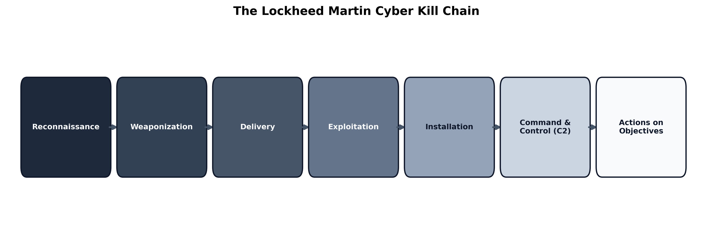
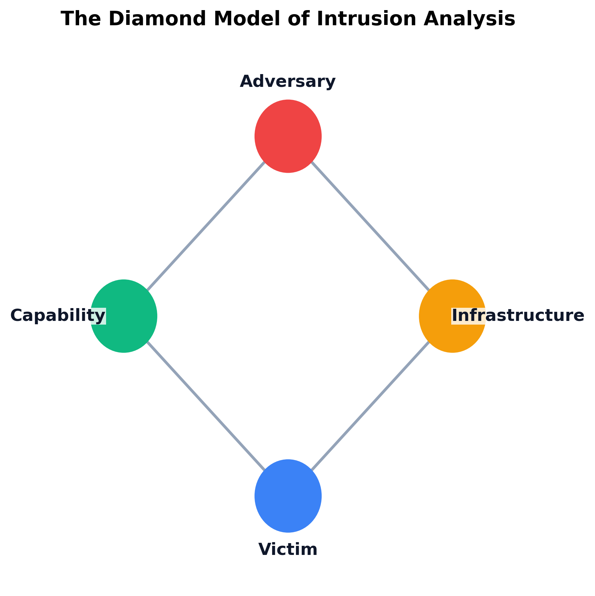
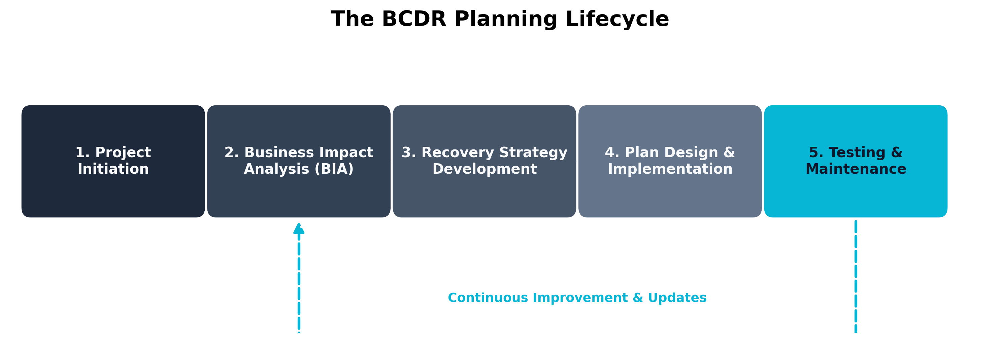

Chapter 2: Risk Management and Threat Modeling
Aligned SecurityX Objectives:
- 1.2: Given a set of organizational security requirements, perform risk management activities.
- 1.4: Given a scenario, perform threat-modeling activities.
Practice-Based Question (PBQ): Fitzwilliam Darcy Quantifies a Vendor Risk
Learning Outcomes:
- Conduct impact analyses using quantitative and qualitative risk assessment methodologies.
- Formulate strategies for third-party risk management, including supply chain and vendor risks.
- Evaluate availability, confidentiality, and integrity risk considerations within business continuity planning.
- Design a crisis management and breach response plan.
- Differentiate between threat actor characteristics (motivation, resources, capabilities).
- Apply industry frameworks (MITRE ATT&CK, Cyber Kill Chain, STRIDE) to threat-modeling activities.
- Determine an organization’s attack surface through architecture reviews and enumeration discovery.
- Assess the applicability of threats to organizations with and without existing systems in place.
- Implement Governance, Risk, and Compliance (GRC) tools for automation and continuous monitoring.
Introduction
Chapter 1 gave us the blueprint for a secure organization. Chapter 2 is the reality check.
No CISO has unlimited budget, infinite time, or enough analysts to secure every asset to the same standard. Spending equal effort on the cafeteria Wi-Fi and the database holding the company’s intellectual property is not “thorough” — it’s a recipe for going broke and getting breached anyway, because thin defenses break everywhere at once.
So modern cybersecurity is not about eliminating risk; it is about managing it. A business that takes zero risks makes zero profit. Moving to the cloud, allowing remote work, and accepting credit cards all introduce risk — and yet refusing to do any of those things would also kill the business. The security professional’s job is not to say “no.” It is to measure each risk, then apply just enough defense to bring it within what the business can tolerate.
That requires discipline. Security leaders have to know what they are protecting (the assets), who might come for it (the threat actors), how those actors operate (the threat models), and how much money and effort each defense is worth. This chapter walks through Risk Management and Threat Modeling — the analytical machinery that turns “we should be more secure” into specific, prioritized, defensible decisions. By the end, you will be able to put a dollar figure on a cyberattack and design a plan for the day everything goes wrong.
How Do We Measure and Prioritize Risk?
Before an organization can defend itself, it must understand what it is defending and how vulnerable those assets are. In cybersecurity, Risk is formally defined as the probability of a threat agent exploiting a vulnerability, and the corresponding business impact of that exploitation.
Key Point The fundamental equation of risk management is: Risk = Threat × Vulnerability × Impact. If any of these three factors are zero, the overall risk is zero. For example, if a severe vulnerability exists in an operating system, but that system is completely unplugged and locked in a concrete vault (zero threat access), the risk is zero.
To systematically manage this equation, organizations rely on formalized risk assessment and governance frameworks such as NIST SP 800-30 and the NIST Cybersecurity Framework 2.0 (Joint Task Force Transformation Initiative 2012; National Institute of Standards and Technology 2024). Regardless of the specific framework chosen, the overarching process generally follows a standardized workflow:

- Asset Identification: You cannot protect what you do not know you have. This involves creating a comprehensive inventory of servers, data, personnel, and physical facilities.
- Threat Identification: Determining who or what might attack the assets (e.g., hackers, natural disasters, insider threats).
- Vulnerability Identification: Finding the weaknesses in the assets (e.g., unpatched software, poor physical security).
- Risk Analysis: Calculating the likelihood of the threat exploiting the vulnerability and the resulting financial or operational impact.
- Risk Treatment: Deciding how to handle the identified risk (mitigate, transfer, avoid, or accept).
Quantitative vs. Qualitative Analysis
When performing Step 4 (Risk Analysis), security teams must decide how to measure the risk. There are two primary methodologies: Qualitative and Quantitative.
Qualitative Risk Analysis relies on subjective judgment, experience, and intuition. Instead of using hard financial numbers, qualitative analysis assigns descriptive values to the likelihood and impact of a risk. You will frequently see this represented as a “heat map” or a traffic-light system (Red, Yellow, Green). For example, a qualitative assessment might determine that the likelihood of a hurricane hitting a Florida data center is “High,” and the impact would be “Severe.”
Qualitative analysis is incredibly popular because it is fast, easy to understand, and does not require complex mathematical modeling. However, it is fundamentally subjective. What one analyst considers a “Medium” risk, another might consider “High.”
Quantitative Risk Analysis, on the other hand, relies entirely on hard financial numbers and historical data. The goal of quantitative analysis is to determine the exact dollar value of a risk so that management can make mathematically sound budget decisions. If a specific firewall upgrade costs $100,000, but the quantitative risk analysis proves that the firewall will prevent $500,000 in expected annual losses, the purchase is mathematically justified.
To perform a quantitative analysis, you must calculate three specific metrics:
- Single Loss Expectancy (SLE): The total financial loss an organization would suffer from a single occurrence of the threat. This includes the cost of replacing hardware, lost revenue during downtime, and regulatory fines.
- Annualized Rate of Occurrence (ARO): The historical probability that the threat will occur within a single year. If a flood happens once every 10 years, the ARO is 0.1. If a server crashes five times a year, the ARO is 5.0.
- Annualized Loss Expectancy (ALE): The total financial loss the organization expects to suffer from this threat per year. The formula is simple: ALE = SLE × ARO.
Warning A common pitfall in risk management is attempting to use Quantitative Analysis for highly unpredictable, unprecedented cyberattacks (like a zero-day exploit). If you have no historical data to calculate an accurate Annualized Rate of Occurrence (ARO), your quantitative math is essentially guesswork. In these scenarios, Qualitative Analysis is often more appropriate.
| Metric | Qualitative Analysis | Quantitative Analysis |
|---|---|---|
| Primary Input | Subjective judgment and expert intuition | Hard financial data and historical statistics |
| Output Format | Descriptive labels (Low, Medium, High, Critical) | Dollar amounts ($) and percentages (%) |
| Speed & Effort | Fast to conduct; requires minimal resources | Slow and complex; requires extensive data gathering |
| Best Used For | Initial risk screening and prioritizing a massive list of threats | Justifying expensive security purchases to the Board of Directors |
Impact Analysis and Extreme but Plausible Scenarios
When analyzing impact, security teams must avoid “failure of imagination.” Standard impact analysis typically looks at average, expected disruptions—a server crashing for two hours or an employee clicking a phishing link. However, robust risk management requires assessing Extreme but Plausible Scenarios.
These are “Black Swan” events: highly unlikely, yet entirely possible events that would have a devastating impact on the organization. For a hospital, an extreme but plausible scenario is not just a brief power outage; it is a ransomware attack that simultaneously locks all electronic health records, shuts down life-support monitoring systems, and disables the VoIP telephone network, all while a major natural disaster brings an influx of trauma patients.
By modeling these extreme but plausible scenarios, organizations ensure that their crisis management plans are resilient enough to handle absolute worst-case conditions, rather than just everyday inconveniences.
Example A standard risk analysis for a bank might consider a temporary internet outage. An extreme but plausible scenario would model a coordinated attack where threat actors launch a massive Distributed Denial of Service (DDoS) attack against the bank’s customer portal simultaneously while a rogue insider wipes the primary database backups, crippling both customer access and recovery capabilities at the exact same moment.
Risk Appetite and Tolerance
Once the risk has been calculated, the organization must decide what to do with it. This decision is guided by the organization’s Risk Appetite and Risk Tolerance.
- Risk Appetite: The broad, overarching amount of risk an organization is willing to aggressively pursue to achieve its strategic goals. A lean, aggressive tech startup will have a massive risk appetite—they are willing to launch buggy, unsecure software quickly to capture market share. A traditional national bank will have a very low risk appetite.
- Risk Tolerance: The specific, measurable deviation from the risk appetite that the organization will temporarily accept. For example, a hospital’s risk appetite might state “We accept zero unplanned downtime.” Their risk tolerance might be “We will tolerate up to 5 minutes of downtime per month for emergency patching.”
Based on these thresholds, the organization will choose one of four Risk Treatment strategies:
- Mitigation: Implementing security controls (like firewalls or encryption) to reduce the likelihood or impact of the risk.
- Transference: Shifting the financial burden of the risk to a third party. The most common example of this is purchasing a cybersecurity insurance policy.
- Avoidance: Completely abandoning the activity that causes the risk. If an organization determines that launching a specific cloud application is too risky to secure, they may simply cancel the project.
- Acceptance: Acknowledging the risk but deciding to do nothing because the cost of mitigating the risk exceeds the potential loss.
Example A company realizes that an older, unsupported legacy server is highly vulnerable to attack.
- Mitigation: They install a Web Application Firewall (WAF) in front of the server to block malicious traffic.
- Transference: They purchase a $1 million cyber insurance policy specifically covering web breaches.
- Avoidance: They permanently shut down the legacy server and migrate the functionality to a modern, secure cloud provider.
- Acceptance: They determine the server only holds public marketing brochures, so they leave it running as-is and accept the risk of it being defaced.
GRC Tools, Mapping, and Continuous Monitoring
In a modern enterprise, managing risk across thousands of servers, hundreds of third-party vendors, and dozens of compliance frameworks is mathematically impossible using manual spreadsheets. To handle this complexity, organizations deploy Governance, Risk, and Compliance (GRC) Tools.
GRC tools are massive software platforms designed to automate the entire risk management lifecycle. They provide several critical functions:
- Mapping: GRC tools automatically map specific technical controls to multiple compliance frameworks simultaneously. If you configure a firewall rule, the GRC tool maps that single action to satisfy requirements for both PCI DSS and HIPAA, preventing duplicate work.
- Automation and Documentation: Rather than manually emailing department heads to ask if they have completed their security audits, GRC tools automate these workflows, track completion status, and generate centralized documentation for external auditors.
- Continuous Monitoring: Traditional risk assessments are static point-in-time exercises (e.g., an annual audit). GRC tools integrate directly with the IT infrastructure via APIs to provide continuous monitoring. If a server suddenly falls out of compliance due to an unauthorized configuration change, the GRC tool automatically updates the organization’s live risk dashboard and alerts the security team.
By utilizing GRC platforms, security teams can shift their focus from manually tracking compliance checkboxes to actively defending the organization.
Validating Risk Treatments and Testing Plans
Identifying a risk and selecting a treatment strategy is not the end of the process. Security teams must also validate that the selected control actually reduces the real-world risk to an acceptable level. A firewall rule written on paper, a backup policy saved in SharePoint, or an incident response runbook approved by Legal are all meaningless if nobody has confirmed that they work under stress.
Validation takes different forms depending on the risk being addressed:
- Control validation: Verifying that the selected safeguard is operating as intended. This can include vulnerability scans, control assessments, attack simulations, and targeted retesting after remediation.
- BCDR testing: Proving that backup and recovery plans work in practice. Tabletop exercises, restore drills, and failover tests reveal whether recovery time objectives are realistic or merely aspirational.
- Incident response testing: Rehearsing the response to a data leak, ransomware outbreak, or sensitive/privileged data breach before the real event occurs. The goal is to expose confusion in roles, reporting obligations, and escalation paths while the stakes are still low.
This is especially important for Confidentiality Risk. When confidential data is exposed, the organization must be prepared for data leak response, triage of a sensitive/privileged data breach, formal reporting to regulators or customers, and the use of encryption to reduce the blast radius in the first place. Mature organizations do not merely buy controls; they continuously test whether those controls actually change the outcome.
Case Study Fitzwilliam Darcy and the Derbyshire Holdings Calculation (Quantitative Risk)
Fitzwilliam Darcy, the Director of Risk Management at the highly prestigious investment firm Derbyshire Holdings, was facing a budget crisis. His security engineers requested $150,000 to purchase an advanced web application firewall (WAF) to protect the firm’s primary trading portal from Distributed Denial of Service (DDoS) attacks. The Board of Directors, skeptical of the cost, demanded financial justification.
Darcy opted for a strict Quantitative Risk Analysis to prove the ROI of the firewall.
First, he calculated the Single Loss Expectancy (SLE). He consulted with the trading floor managers and determined that if the trading portal went down due to a DDoS attack, Derbyshire Holdings would lose $10,000 in trading fees for every hour of downtime. Historical data showed that an average DDoS attack lasted exactly 4 hours. Therefore, the SLE was $40,000.
Next, he calculated the Annualized Rate of Occurrence (ARO). Darcy pulled threat intelligence reports and reviewed the firm’s own logs from the past decade. He found that the trading portal was successfully taken offline by DDoS attacks exactly 5 times over the last 10 years. This meant an attack occurred, on average, 0.5 times per year (ARO = 0.5).
Finally, Darcy calculated the Annualized Loss Expectancy (ALE) using the formula ALE = SLE × ARO. ALE = $40,000 × 0.5 = $20,000.
Darcy presented these findings to the Board. He explained that without the firewall, the firm was expected to lose $20,000 every single year to DDoS attacks. Over the 5-year expected lifespan of the $150,000 firewall, the attacks would only cost the firm $100,000.
Because the cost of the mitigation ($150,000) was greater than the expected financial loss over that same time period ($100,000), Darcy recommended that the Board Accept the risk and deny the purchase of the firewall. The math proved that buying the firewall was actually a worse financial decision than simply absorbing the cost of the cyberattacks.
Thought Question Based on Darcy’s calculations, if a new threat intelligence report indicated that a hostile nation-state was targeting investment firms, increasing the DDoS ARO to 2.0, how would that change the ALE and the final budget recommendation?
Quick Check 2.1
- Recall. What does ALE measure, and which two values do you multiply to calculate it?
- Discriminate. A team is assessing a brand-new zero-day with no reliable historical frequency data. Should they favor qualitative or quantitative analysis, and why?
- Apply. A backup policy exists on paper, but nobody has ever run a restore drill or incident exercise against it. According to the chapter, what key step is still missing?
Answers — Quick Check 2.1
- ALE is the expected annual loss from a threat. It is calculated as SLE x ARO.
- Qualitative analysis. Without credible historical data, a quantitative ARO is just guesswork.
- Validation and testing. The organization still has to prove the control or plan works through exercises, retesting, or restore drills.
Who Are Our Adversaries?
Once we understand our assets and the impact if they are compromised, the next step is to understand who might compromise them. A vulnerability without a threat actor is just a theoretical problem. In the real world, adversaries actively hunt for vulnerabilities to exploit. Understanding the nature of these adversaries allows security teams to build highly targeted, efficient defenses rather than relying on generic, “catch-all” strategies.
Threat Actor Motivations and Resources
Not all hackers are equal. A teenager in their basement has a vastly different operational capacity than a highly funded military cyber-unit. To accurately model threats, we must categorize adversaries based on their Motivations and their Resources.
Motivations drive why the attack is happening. Common motivations include:
- Financial Gain (Organized Crime): The most common motivation. These actors operate like legitimate businesses with HR departments and customer support. Example: The Conti ransomware gang extorting millions from healthcare organizations.
- Geopolitical / Cyber Warfare (Nation-State): Highly funded, state-sponsored actors attacking critical infrastructure to destabilize rival nations. Example: The Stuxnet worm, reportedly built by US and Israeli intelligence, which physically destroyed Iranian nuclear centrifuges.
- Activism (Hacktivism): Ideologically driven attacks. A hacktivist group might deface a corporate website or leak internal emails to protest a company’s environmental policies. Example: The collective Anonymous launching DDoS attacks against oppressive regimes.
- Notoriety: Often referred to as “Script Kiddies,” these actors lack technical skill and launch pre-built attacks simply for bragging rights within hacker communities or to prove a point.
- Espionage (APT): The quiet, long-term theft of intellectual property or state secrets. Example: APT29 (Cozy Bear) breaching government agencies to quietly monitor internal communications for years without being detected.
Key Point A threat actor’s motivation directly influences their behavior. A financially motivated attacker wants a quick payout; if your defenses are too difficult to breach, they will move on to an easier target. Conversely, an espionage-focused attacker (like a nation-state) is incredibly patient. They will spend months slowly bypassing your defenses to steal specific data without raising an alarm.
Resources and Capabilities dictate how the attack is executed. We evaluate an adversary’s resources across three dimensions:
- Time and Money: Does the attacker have unlimited government funding and years to plan an attack, or are they a lone criminal needing a quick payday?
- Knowledge, Vulnerability Creation, and Exploit Creation: Advanced attackers do not rely only on known weaknesses. They possess the engineering talent to discover brand-new, unpatched flaws (Zero-Days), deliberately create new vulnerabilities in software supply chains, and build custom malware or exploit chains from scratch.
- Supply Chain Access: The most elite adversaries can physically intercept hardware during shipping or compromise a trusted vendor to poison software updates before they ever reach the target.
| Threat Actor Type | Primary Motivation | Resources & Capabilities | Typical Tactics |
|---|---|---|---|
| Nation-State / APT (Advanced Persistent Threat) | Espionage, Geopolitical dominance | Unlimited funding, custom zero-day exploits, massive intelligence networks. | “Low and slow” attacks, supply chain compromise, long-term persistence. |
| Organized Crime | Financial gain | High funding, sophisticated ransomware operations, access to the dark web economy. | Ransomware-as-a-Service (RaaS), phishing, extortion. |
| Hacktivist | Ideological/Political | Variable (often low funding, but high numbers and coordination). | DDoS attacks, website defacement, public data dumps. |
| Insider Threat | Financial gain, revenge, or accidental | Pre-existing access to the network, knowledge of internal security protocols. | Data exfiltration, sabotage, accidental misconfiguration. |
Supply Chain, Vendor, and Subprocessor Risk
One of the most dangerous adversary capabilities is exploiting the Supply Chain. Modern enterprises do not operate in a vacuum; they rely on a vast network of third-party vendors, software providers, and contractors.
Vendor Risk occurs when an organization grants a trusted third party access to its network or data. For example, a hospital might hire an external accounting firm to process its payroll. If the accounting firm has weak security, an attacker can hack the firm and use their trusted connection to pivot directly into the hospital’s heavily fortified internal network.
The risk expands further with Subprocessors. A subprocessor is a fourth-party: it is the vendor that your vendor uses. If the hospital’s accounting firm uses a cloud hosting provider to store the payroll data, that cloud provider is a subprocessor. Even if the hospital meticulously vetted the accounting firm, a breach at the unvetted cloud hosting provider will still result in the hospital’s data being stolen.
Warning An organization can outsource its operations to a vendor, but it can never outsource its risk. If your vendor suffers a breach and loses your customers’ credit card numbers, the regulatory agencies and the media will blame your organization, not the vendor.
To mitigate third-party risk, organizations must establish rigorous vendor management programs. This includes requiring vendors to pass security audits (such as providing a SOC 2 report), enforcing the principle of least privilege for vendor network access, and actively monitoring the vendor’s cybersecurity posture.
Case Study The Target HVAC Vendor Breach (Third-Party Risk)
In 2013, the retail giant Target suffered one of the most infamous data breaches in history, resulting in the theft of 40 million credit and debit card numbers. The breach was a masterclass in exploiting third-party vendor risk (United States Senate Committee on Commerce, Science, and Transportation, Majority Staff 2014).
Target had invested millions of dollars in robust perimeter security for their corporate network and point-of-sale (POS) systems. However, a financially motivated cybercriminal syndicate realized that attacking Target’s formidable defenses directly would be too difficult. Instead, the attackers identified a softer target: Fazio Mechanical Services, a small heating, ventilation, and air conditioning (HVAC) company that serviced Target’s stores.
Because Fazio monitored the temperature of the stores, Target had granted the HVAC vendor remote access to its vendor portal. The attackers launched a simple phishing campaign against Fazio employees and successfully infected the small vendor’s computers with a credential-stealing trojan (United States Senate Committee on Commerce, Science, and Transportation, Majority Staff 2014; Krebs 2014).
Using the stolen credentials, the attackers logged into Target’s vendor portal. From there, they were able to pivot out of the vendor system and traverse Target’s internal network until they reached the POS registers. The attackers deployed custom malware onto the cash registers that scraped the credit card data from the magnetic stripe the exact moment a customer swiped their card, before the data could be encrypted (United States Senate Committee on Commerce, Science, and Transportation, Majority Staff 2014).
This catastrophic breach demonstrated that an enterprise’s security is only as strong as its weakest vendor. It fundamentally changed how the cybersecurity industry approaches third-party risk and network segmentation.
Thought Question If Target had implemented strict network microsegmentation—completely isolating the HVAC vendor portal on a separate VLAN from the point-of-sale network—how would the outcome of this attack have changed?
Quick Check 2.2
- Recall. Which two factors does the chapter use to profile threat actors?
- Discriminate. If your direct vendor is secure, but the cloud host that vendor uses gets breached, is that vendor risk or subprocessor risk?
- Apply. A contractor portal must stay online, but you do not want a phishing compromise at the vendor to become a bridge into payment systems. What architectural control from the Target case most changes the outcome?
Answers — Quick Check 2.2
- Motivation and resources or capabilities. The chapter asks why the actor is attacking and what time, money, skill, and access they bring.
- Subprocessor risk. The exposure comes from the vendor’s vendor rather than the direct third party you reviewed.
- Strict segmentation or microsegmentation. Isolating the vendor portal from sensitive internal systems blocks the pivot into assets like POS or payment networks.
How Do We Model Threats Effectively?
Once we know who our adversaries are and what they are after, we must understand how they will attack us. This is the domain of Threat Modeling. Threat modeling is a structured process used to identify potential threats, discover where a system is most vulnerable, and define countermeasures to prevent or mitigate the effects of cyberattacks.
Instead of guessing what an attacker might do, security professionals use established, formalized frameworks to dissect and analyze cyber threats.
Threat Modeling Frameworks
The CompTIA SecurityX exam requires a deep understanding of several prominent threat modeling frameworks. Each framework serves a slightly different purpose—some focus on the software development lifecycle, while others focus on active network intrusions.
The Lockheed Martin Cyber Kill Chain
Developed by Lockheed Martin, the Cyber Kill Chain models the sequential phases an adversary must complete to successfully execute a cyberattack. The core philosophy is that an attack is a chain of events; if the defending organization can break the chain at any point, the attack fails.

- Reconnaissance: The attacker gathers intelligence on the target (e.g., searching LinkedIn for employee emails, scanning for open firewall ports).
- Weaponization: The attacker couples a remote access trojan with an exploit into a deliverable payload (e.g., creating a malicious PDF file).
- Delivery: The weaponized payload is transmitted to the target (e.g., sending the PDF via a phishing email).
- Exploitation: The weapon triggers on the victim’s system, exploiting a vulnerability to execute code.
- Installation: The attacker installs a backdoor or malware on the victim’s system to ensure they don’t lose access if the system reboots.
- Command and Control (C2): The compromised system reaches out to the attacker’s external server to establish a two-way communication channel.
- Actions on Objectives: With hands-on keyboard access, the attacker accomplishes their goal (e.g., encrypting files for ransom, exfiltrating data).
Key Point The earlier in the Kill Chain an attack is stopped, the cheaper and easier it is to remediate. Blocking a phishing email during the Delivery phase costs almost nothing. Stopping ransomware during the Actions on Objectives phase can cost millions of dollars.
The Diamond Model of Intrusion Analysis
While the Cyber Kill Chain focuses on the sequence of an attack, the Diamond Model focuses on the relationships between four core features of every malicious event.

The Diamond Model connects:
- Adversary: The threat actor behind the attack.
- Victim: The target organization or individual.
- Capability: The tools, malware, or exploits the adversary used.
- Infrastructure: The physical or logical communication structures the adversary used to deliver the capability (e.g., compromised IP addresses, domain names).
Analysts use the Diamond Model to pivot from knowns to unknowns. If an analyst detects a specific IP address (Infrastructure) delivering a specific trojan (Capability) to their network (Victim), they can cross-reference threat intelligence databases to potentially identify the Nation-State (Adversary) that exclusively uses that combination.
MITRE ATT&CK
The MITRE ATT&CK (Adversarial Tactics, Techniques, and Common Knowledge) framework is a globally accessible knowledge base of adversary tactics and techniques based on real-world observations. Unlike the theoretical Cyber Kill Chain, MITRE ATT&CK is highly practical and granular. It provides a massive matrix detailing the exact methods attackers use to bypass specific defenses.
Example A security team wants to defend against attackers stealing passwords. They look up the Tactic of “Credential Access” in the MITRE ATT&CK matrix. Under this Tactic, they find the specific Technique “OS Credential Dumping” (T1003). MITRE explains that attackers frequently target the LSASS memory process in Windows to extract plaintext passwords. MITRE then provides the exact commands an attacker would run, and lists specific Mitigations, such as enabling Windows Credential Guard, to stop it.
STRIDE, CAPEC, and OWASP
When modeling threats during the software engineering and application development phase, different frameworks are used:
- STRIDE: Created by Microsoft, it is an acronym for modeling software threats: Spoofing, Tampering, Repudiation, Information Disclosure, Denial of Service, and Elevation of Privilege.
- CAPEC: The Common Attack Pattern Enumeration and Classification is a dictionary of known attack patterns used by adversaries to exploit weaknesses in applications.
- OWASP: The Open Worldwide Application Security Project is a nonprofit foundation that maintains the “OWASP Top 10,” the globally recognized standard document representing the ten most critical security risks to web applications (such as Injection attacks and Broken Access Control).
Example A software engineer is designing a new customer login portal and uses STRIDE to threat model the code before deploying it.
- Spoofing: Could a hacker pretend to be a legitimate customer? (Mitigation: Require Multi-Factor Authentication)
- Tampering: Could a hacker intercept and change the password reset link in transit? (Mitigation: Enforce HTTPS/TLS encryption)
- Repudiation: If a customer makes a massive purchase, could they later deny doing it? (Mitigation: Log the IP address and exact timestamp of every transaction)
Threat Modeling Methods
Frameworks tell us which lenses to use. Threat-modeling methods tell us how to reason about the system itself.
- Abuse Cases: These invert normal business requirements and ask how a feature could be intentionally misused. If the product requirement says “customers can upload documents,” the abuse case asks how an attacker might upload a weaponized file, oversized payload, or poisoned prompt.
- Antipatterns: These identify insecure design habits that repeatedly create weaknesses, such as hard-coding trust in the internal network, assuming a vendor connection is automatically safe, or letting one privileged service account bypass every approval path.
- Attack Trees and Attack Graphs: These methods break a goal into branches showing the different paths an attacker might take to reach it. They are particularly useful for comparing compensating controls, because defenders can see exactly which branch a firewall, code change, segmentation rule, or review process is meant to break.
Determining the Attack Surface
To model threats effectively, you must understand your organization’s Attack Surface—the total sum of all possible points where an unauthorized user can enter or extract data from an environment.
Security architects map the attack surface by charting Data Flows and identifying Trust Boundaries. A trust boundary is anywhere data changes its level of trust. For example, the border between the public internet (untrusted) and the corporate internal network (trusted) is a primary trust boundary, usually guarded by a firewall. The border between an employee’s laptop and the heavily restricted payroll database is another internal trust boundary.
A complete attack surface review goes beyond drawing network lines on a diagram. It also includes architecture reviews to inspect how systems are composed, code reviews to examine dangerous implementation details, and user factors such as administrator workarounds, shared accounts, weak approval workflows, and unsafe habits that widen exposure without changing a single packet flow.
Whenever data crosses a trust boundary, it must be validated, authenticated, and encrypted.
Example Consider an employee working from a coffee shop who needs to access a corporate database. The coffee shop’s public Wi-Fi is highly untrusted. The employee connects to the corporate VPN, passing through the first Trust Boundary (the corporate edge firewall). Even though they are now on the internal network, the database itself sits behind a second internal Trust Boundary (a database firewall). The employee must re-authenticate with database-specific credentials to cross this second boundary, ensuring that a compromised laptop cannot automatically extract sensitive records.
Warning A common flaw in legacy threat modeling is assuming the entire internal network is a single “trusted” zone without internal boundaries. Modern adversaries exploit this by breaching a low-level employee’s laptop and then moving laterally through the internal network unopposed. This is why modern architectures advocate for Zero Trust—a model where no user or device is trusted by default, even if they are already inside the corporate perimeter.
Attack surface determination also requires active Enumeration and Discovery. Security teams must account for internally and externally facing assets, third-party connections, unsanctioned assets/accounts, forgotten SaaS tenants discovered through cloud services discovery, and the organization’s public digital presence across marketing sites, developer portals, DNS records, and exposed APIs.
Finally, threat models must incorporate legal and business constraints. Legal holds may prevent data destruction during litigation. Due diligence and due care shape what a reasonable defender is expected to verify before a merger, cloud migration, or vendor integration. Export controls can restrict where software, cryptography, or data may flow. Contractual obligations often impose stricter logging, notification, or isolation requirements than the law itself.
The Impact of Organizational Change
An organization’s attack surface is not static; it changes dramatically during major business events. Security teams must continuously update their threat models to account for:
- Mergers and Acquisitions (M&A): When one company buys another, they acquire the target company’s network, data, and technical debt. If the acquired company has poor security, connecting their network to the parent company’s network creates a massive, unvetted attack surface.
- Divestitures: When a company spins off a division, security teams must cleanly sever data flows, revoke access credentials, and ensure the divested entity does not retain unauthorized access to the parent company’s intellectual property.
- Staffing Changes: Layoffs, rapid hiring, contractor turnover, or a sudden change in privileged administrators can create security blind spots, orphaned accounts, weakened review processes, and gaps in institutional knowledge.
Example During a corporate acquisition, the acquiring company’s security team performs enumeration discovery (scanning the acquired company’s external IP addresses) to determine their new attack surface. They discover a dozen legacy web servers running outdated, vulnerable software that the acquired company’s IT team had completely forgotten about. By threat modeling this new surface, they realize an attacker could use these forgotten servers to pivot into the newly merged corporate network.
Modeling Existing and Greenfield Environments
Threat modeling also changes depending on whether the organization is working with an established system or designing from a blank page.
With an Existing System in Place: The security team must begin with the real constraints of the current environment: legacy integrations, inherited trust relationships, unsupported software, and business processes that cannot be interrupted. In this scenario, the core task is often the selection of appropriate controls to reduce risk without breaking the business. That may mean segmentation around a legacy server, stronger monitoring around a sensitive workflow, or compensating controls where direct replacement is not yet feasible.
Without an Existing System in Place: Greenfield designs allow architects to define trust boundaries, identity flows, encryption requirements, and approval gates before technical debt accumulates. This is where abuse cases, attack trees, and design reviews are most powerful, because the team can eliminate entire classes of threats before code is ever written or infrastructure is ever deployed.
Quick Check 2.3
- Recall. What four features does the Diamond Model connect?
- Discriminate. If a defender wants a catalog of real-world tactics like Credential Access and OS Credential Dumping, should they use MITRE ATT&CK or STRIDE?
- Apply. During an acquisition, enumeration discovers forgotten legacy web servers on the acquired company’s internet edge. What does that do to the attack surface, and what should the security team do next?
Answers — Quick Check 2.3
- Adversary, victim, capability, and infrastructure.
- MITRE ATT&CK. ATT&CK catalogs observed tactics and techniques; STRIDE is a design-time framework for software threat categories.
- The attack surface has expanded with unvetted systems. The team should update the threat model, review the new architecture, and add controls or segmentation before integrating them.
What is the Plan for the Worst-Case Scenario?
No matter how robust an organization’s threat models and preventative controls are, determined adversaries will eventually breach the perimeter. In cybersecurity, the assumption of a breach is not pessimism; it is a foundational principle of modern defense. Therefore, security architects must design systems that not only resist attack but can rapidly recover when compromised.
When a major incident occurs, an organization relies on two critical disciplines: Crisis Management and Business Continuity and Disaster Recovery (BCDR).
Crisis Management and Breach Response
Crisis management focuses on the immediate, human-centric response to a catastrophic event. It is about leadership, communication, and decision-making under extreme pressure.
A formal Breach Response Plan outlines exactly who is in charge during a cyber incident. It defines the Incident Response (IR) team roles, establishing who has the authority to declare a disaster, who is authorized to speak to the media, and when to notify law enforcement or regulatory bodies.
Warning A technical team can successfully contain malware within minutes, but if the Public Relations team issues a misleading statement to the press, or the Legal team fails to notify regulators within 72 hours (as required by GDPR), the organization will still suffer massive reputational and financial damage. Crisis management ensures all departments move in lockstep.
BCDR, Availability Risk, and Backup Strategies
While crisis management handles the human element, Business Continuity and Disaster Recovery (BCDR) handles the technical and operational recovery. BCDR is designed to mitigate Availability Risk—the risk that critical systems or data will be inaccessible when needed.

A BCDR plan answers a simple question: How does the business survive if our primary data center is destroyed or our data is encrypted by ransomware?
The cornerstone of any BCDR strategy is backups. However, not all backups provide the same level of protection:
- Connected Backups (Online): These are backup servers or cloud storage buckets that are continuously attached to the primary network. They are fast and allow for rapid restoration. However, because they are connected, modern ransomware can easily spread from the primary network to the connected backup server, encrypting both simultaneously.
- Disconnected Backups (Offline / Air-Gapped): These backups are physically or logically severed from the primary network. This could be tape drives stored in a physical vault, or immutable cloud backups stored in an isolated, read-only tenant. Disconnected backups are immune to standard network-based ransomware because the attacker literally cannot reach them.
Key Point To combat advanced ransomware, organizations should employ the 3-2-1 Backup Rule: Keep at least 3 copies of your data, on 2 different storage media, with 1 copy stored entirely offsite and offline (disconnected).
Integrity Risk
In addition to availability, BCDR plans must account for Integrity Risk. It is not enough to just restore a database from a backup; you must prove mathematically that the attacker did not subtly alter the backup data before you restored it.
Security engineers protect data integrity using several mechanisms:
- Hashing: Generating cryptographic hashes (like SHA-256) of critical files. If a file is altered by even a single bit, its hash value changes entirely, instantly alerting the system to tampering.
- Remote Journaling: Transmitting database transaction logs to a secure, remote server in real-time. If the primary database crashes or is corrupted, the remote journal can be used to rebuild the database perfectly up to the second before the failure.
- Interference Monitoring: Watching for deliberate attempts to disrupt replication, journal shipping, sensor inputs, or synchronization traffic. Attackers do not always need to corrupt a file directly; sometimes they only need to interfere with the signals and dependencies that defenders rely upon to trust the data.
- Antitampering Controls: Physical or logical mechanisms that protect hardware and logs. For example, a server might have a physical antitamper switch that alerts security if the server chassis is opened. Log files can be forwarded to a centralized, write-once-read-many (WORM) syslog server so an attacker cannot delete their tracks.
Case Study Alice Liddell and the Wonderland Logistics Ransomware Attack (BCDR Execution)
Alice Liddell, the Incident Response Manager at Wonderland Logistics, was awoken at 3:00 AM by automated alerts. The company’s primary East Coast distribution hub had been hit by a sophisticated ransomware variant deployed by an Organized Crime syndicate. The ransomware encrypted the warehouse management databases, completely halting the shipment of thousands of packages.
Following the Breach Response Plan, Alice immediately convened the Crisis Management team. She ordered the network engineers to physically disconnect the East Coast hub from the corporate WAN (mitigating the threat) while the Legal team drafted a preliminary notification for regulatory authorities.
The attackers demanded $2 million in Bitcoin for the decryption key. Alice checked the backup systems. Unfortunately, Wonderland Logistics had relied heavily on Connected Backups for speed. The ransomware had spread to the connected backup server, encrypting those files as well.
However, during the last BCDR lifecycle update, Alice had insisted on a hybrid approach to mitigate Availability Risk. She contacted the offsite data vaulting service and requested the delivery of last week’s Disconnected Backups—physical tape drives that had been air-gapped from the network.
Because the tapes were offline, the ransomware could not reach them. Alice’s team used cryptographic Hashing to verify the integrity of the data on the tapes before restoring it to a clean, isolated environment. To bridge the gap between last week’s tape backup and the exact moment of the attack, they applied the transaction logs stored via Remote Journaling on a segregated server.
By executing a well-rehearsed BCDR strategy, Wonderland Logistics rebuilt their database with perfect integrity and resumed shipping within 18 hours, without paying a single dime to the attackers.
Thought Question If the attackers had lingered in the Wonderland Logistics network for six months before launching the ransomware, how would that have impacted the safety and reliability of the disconnected tape backups?
Quick Check 2.4
- Recall. What does the 3-2-1 backup rule require?
- Discriminate. During a ransomware event, which backup type is safer: connected or disconnected?
- Apply. Wonderland Logistics had week-old offline tapes and separate transaction logs. What combination let Alice restore both availability and data integrity without paying the ransom?
Answers — Quick Check 2.4
- Three copies of data, on two kinds of media, with one copy offsite and offline.
- Disconnected backups. Ransomware can usually reach connected backups, but it cannot encrypt media that is offline or isolated.
- Disconnected backups plus hashing and remote journaling. Alice restored from the offline tapes, verified the data with hashes, and replayed the journaled transactions to catch up safely.
Chapter Review and Conclusion
In this chapter, we explored the reality of defending an enterprise. We learned that risk cannot be eliminated, only managed through mathematical analysis and strategic treatment. We categorized our adversaries, examining the differing motivations and vast resources of Nation-States, Hacktivists, and Insiders. We explored threat modeling frameworks like the Cyber Kill Chain and MITRE ATT&CK to systematically dissect attacks. Finally, we recognized that because breaches are inevitable, resilient Crisis Management and BCDR planning are the ultimate safety net for an organization.
By mastering Risk Management and Threat Modeling, security professionals ensure they are fighting the right battles, against the right adversaries, with the right budget.
Key Terms Review
- Risk: The probability of a threat exploiting a vulnerability and the resulting business impact.
- Quantitative Risk Analysis: Determining risk using hard financial data and historical statistics to calculate exact dollar amounts.
- Qualitative Risk Analysis: Determining risk using subjective judgment, experience, and descriptive labels (e.g., Low, Medium, High).
- Single Loss Expectancy (SLE): The financial cost of a single occurrence of a threat.
- Annualized Rate of Occurrence (ARO): The historical probability of a threat occurring in a single year.
- Annualized Loss Expectancy (ALE): The total financial loss expected from a threat per year (SLE × ARO).
- Risk Appetite vs. Tolerance: Appetite is the broad willingness to take risk for strategic goals; Tolerance is the specific, measurable deviation allowed.
- Risk Treatment Strategies: The four choices a business has when facing risk: Mitigation (reducing), Transference (insurance), Avoidance (canceling), or Acceptance (ignoring).
- GRC Tools: Governance, Risk, and Compliance platforms used to map controls, automate audits, and provide continuous security monitoring.
- Nation-State / APT: Highly funded, government-sponsored adversaries focused on geopolitical dominance, espionage, or destructive cyber warfare.
- Hacktivist: An adversary primarily motivated by ideology or politics rather than financial gain.
- Organized Crime: Adversaries motivated purely by financial gain, often operating Ransomware-as-a-Service (RaaS) operations.
- Insider Threat: An adversary (malicious or accidental) who already has legitimate access to the internal network.
- Vendor & Subprocessor Risk: The risk introduced by a third-party vendor (or the vendor’s vendor) suffering a breach that exposes the primary organization’s data.
- Zero-Day Exploit: A cyberattack that occurs on the same day a weakness is discovered in software, meaning no patch exists.
- Cyber Kill Chain: A framework modeling the sequential phases of a cyberattack.
- MITRE ATT&CK: A granular knowledge base of adversary tactics and techniques.
- STRIDE: A threat modeling framework for software development (Spoofing, Tampering, Repudiation, Information Disclosure, Denial of Service, Elevation of Privilege).
- CAPEC & OWASP: Frameworks listing common attack patterns (CAPEC) and the top critical web application security risks (OWASP).
- Attack Surface: The total sum of all possible points where an unauthorized user can enter or extract data from an environment.
- Trust Boundary: Any point in a system where data changes its level of trust (e.g., passing from the public internet into a private network).
- Connected vs. Disconnected Backups: Connected backups are fast but vulnerable to ransomware; disconnected (air-gapped) backups are offline and immune to network attacks.
- Remote Journaling: Transmitting database transaction logs offsite in real-time to prevent data loss.
Review Questions
True / False
- The fundamental equation of risk is calculated as Threat multiplied by Vulnerability multiplied by Impact.
- A disconnected (air-gapped) backup strategy is highly effective against network-based ransomware because the attacker cannot physically reach the backup media.
- The Lockheed Martin Cyber Kill Chain theorizes that breaking any single link in an attack sequence will cause the entire attack to fail.
- In the Diamond Model of Intrusion Analysis, an IP address used by an attacker to deliver malware is categorized as Infrastructure.
- Nation-State actors, or Advanced Persistent Threats (APTs), are primarily motivated by espionage and geopolitical dominance rather than quick financial payouts.
- GRC tools are used to automate compliance tracking and continuously monitor infrastructure for unauthorized configuration changes.
- The MITRE ATT&CK framework provides a granular matrix of specific tactics and techniques adversaries use to bypass defenses.
- Remote journaling transmits database transaction logs to an offsite server in real-time, mitigating integrity risk by allowing for precise data reconstruction.
- A trust boundary is anywhere data changes its level of trust, such as moving from the public internet into a corporate network.
- Hashing critical files allows security engineers to prove data integrity by detecting if even a single bit of the file has been tampered with.
Scenario Multiple Choice
- A risk analyst calculates that a database server outage costs the
company $80,000 per incident, and historical data shows two outages
every five years. What is the Annualized Loss Expectancy (ALE) the
analyst should present to the budget committee?
- $16,000
- $32,000
- $40,000
- $200,000
- A regional hospital wants to launch a new patient portal. The CIO is
willing to delay the launch, buy insurance, redesign the architecture,
or shelve the project entirely. The security team determines the
residual risk is moderate but the cost of additional controls would
exceed the projected revenue from the portal for the first three years.
Which risk treatment strategy is the team recommending?
- Mitigation
- Transference
- Avoidance
- Acceptance
- After a breach, investigators discover that attackers compromised a
payroll vendor, then used the vendor’s authorized VPN tunnel to reach
the customer’s HR database. The vendor’s contract clearly stated they
were responsible for their own security. When regulators announce fines,
who is held legally and reputationally accountable?
- The vendor only, because the breach originated on their systems.
- The customer organization, because risk cannot be outsourced even when operations can.
- Both parties equally, because the contract assigned shared liability.
- Neither, because the attackers, not the defenders, caused the breach.
- A logistics company is choosing a backup strategy to defend against
ransomware. They need rapid restoration for everyday hardware failures
and assurance that a network-wide ransomware outbreak cannot
encrypt every copy. Which strategy best satisfies both needs?
- Daily connected backups to a redundant cloud bucket on the same network.
- Weekly tape backups stored in a physical vault, with no online copies.
- The 3-2-1 rule: connected backups for speed plus disconnected/offline copies for ransomware resilience.
- Continuous replication to a hot standby database within the same data center.
- A development team is threat-modeling a new web application. They
want a framework that gives them concrete categories of software-level
threats to walk through during design review (e.g., is spoofing
possible? could a user repudiate this transaction?). Which framework
fits this purpose best?
- The Cyber Kill Chain, because it sequences the phases of an attack.
- STRIDE, because it categorizes threat types directly tied to software design flaws.
- The Diamond Model, because it relates adversaries to victims.
- MITRE ATT&CK, because it lists adversary tactics observed in the wild.
Answer Key
- True: If any of these three variables are zero, the total risk is zero.
- True: Offline backups are immune to standard network ransomware.
- True: The model is built on the philosophy that defense-in-depth at any stage stops the final objective.
- True: Infrastructure represents the physical or logical communication structures used.
- True: They often conduct “low and slow” attacks to quietly exfiltrate intelligence over years.
- True: GRC platforms map controls to frameworks and automate auditing workflows.
- True: It is heavily used by defenders to map specific, real-world attacker behaviors to mitigations.
- True: This ensures that even if the primary database is encrypted, the transactions can be perfectly rebuilt.
- True: Data crossing a trust boundary must be validated, authenticated, and encrypted.
- True: Hashing provides mathematical proof of integrity against tampering.
- b. $32,000. SLE = $80,000; ARO = 2 / 5 = 0.4; ALE = SLE × ARO = $32,000.
- c. Avoidance. When the cost of mitigation exceeds the projected business value of the activity itself, the rational treatment is to abandon the project rather than mitigate, insure, or accept the residual risk.
- b. The customer organization. Operations can be outsourced; risk and regulatory liability cannot. Regulators and the public hold the data controller accountable regardless of where the breach originated.
- c. The 3-2-1 rule. Connected backups handle routine recovery; disconnected/offline copies survive ransomware that propagates across the network. A single-mode strategy fails one of the two requirements.
- b. STRIDE. STRIDE was designed for application-design threat modeling and maps directly to spoofing, tampering, repudiation, information disclosure, denial of service, and elevation of privilege — exactly the categories the team needs during design review.